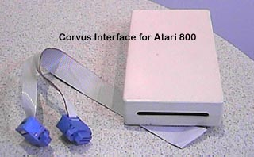

 The Corvus
Hard Drive system exploited a little used ability of the powerful interface
ports on the Atari 800 computer system. While almost everyone
else was using the interface ports for plugging joysticks into and playing
games. Corvus Systems used a very simple interface using
about a dozen gate-chips to communicate with the PIA interface through
joystick ports 3&4 of the Atari 800. Using a specially
modified version of Atari DOS 2.0d (most users only had access to DOS 2.0s)
or using an OS replacement board by David Small (Creator of MagicSac Mac
emulator for the Atari ST's) called "The Integrator" an Atari 800 computer
could access and use the Corvus hard drive as 8 DS/DD disk drives.
If "The Integrator" was used, the OS board could be set to boot off of
the Corvus hard drive and no 810 disk drive would be necessary.
The Corvus hard disk system also sported a unique and innovative back-up
system called "The Corvus Mirror" which was a VCR interface system that
allowed you to plug a standard Video Cassette Recorder (VCR) up to the
Corvus Hard Drive System to save back-ups of the hard disk onto actual
Video Tapes!!!